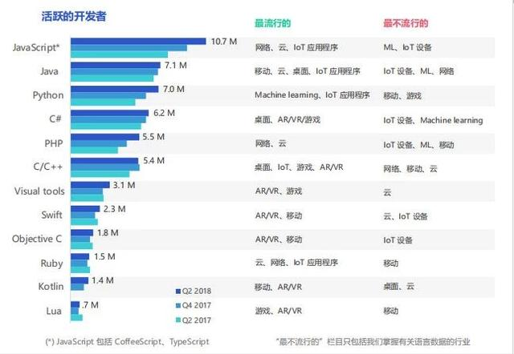
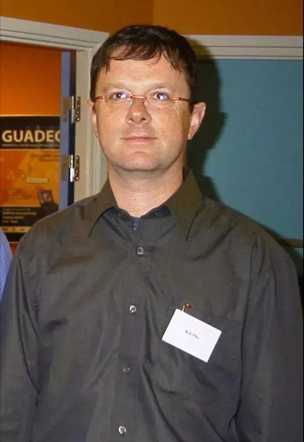

据说这是难学的十大编程语言 Java排第三 它竟是第一名！
黑马程序员在线学院 2019-04-08 10:42:26
编程语言是开发者们代码工作的核心，也是许多开发者最爱讨论的话题。编程语言的选择对开发者和工具制造商都十分重要，前者需要保持最新和具备市场潜力的技能，后者则亟需确保他们能够提供最有用的 SDK。
开发者经济分析公司 SlashData 曾发布了《 2018 年第 2 季度各国开发者状况》调查报告，共有 167 个国家的 20500 多名开发者参与其中。
报告面向全球所有类型的程序员，对使用每种主要编程语言的活跃开发者数量进行了最新的估计。其中，JavaScript 仍是最流行的编程语言，Python 流行程度接近 Java。

哪种语言最难学呢?每个人也许都有着自己的想法，衡量标准各不相同。
现在我们从一个全新的，无可反驳的角度来分析一下各个编程语言难学程度。
- 第十名、R语言
颁奖词
R语言，一种自由软件编程语言与操作环境，主要用于统计分析、绘图、数据挖掘。R基于S语言的一个GNU计划项目，所以也可以当作S语言的一种实现，通常用S语言编写的代码都可以不作修改的在R环境下运行。R的语法是来自Scheme。
提名词
R语言作者，George Ross Ihaka：在奥克兰大学统计系任副教授，是R语言的最初作者。
排名理由
作者头发浓密度：100%
- 第九名、Python
颁奖词
Python是一种广泛使用的高级编程语言，属于通用型编程语言。作为一种解释型语言，Python的设计哲学强调代码的可读性和简洁的语法。相比于C++或Java，Python让开发者能够用更少的代码表达想法。不管是小型还是大型程序，该语言都试图让程序的结构清晰明了。
提名词
Python语言作者，Guido van Rossum：生于荷兰哈勒姆，计算机程序员，为Python程序设计语言的最初设计者及主要架构师。
排名理由
作者头发浓密度：95%
- 第八名、C语言
颁奖词
C是一种通用的编程语言，广泛用于系统软件与应用软件的开发。C语言具有高效、灵活、功能丰富、表达力强和较高的可移植性等特点。C语言编译器普遍存在于各种不同的操作系统中，例如Microsoft Windows、macOS、Linux、Unix等。C语言的设计影响了众多后来的编程语言，例如C++、Objective-C、Java、C#等。
提名词
C语言作者，Dennis MacAlistair Ritchie：美国计算机科学家。黑客圈子通常称他为“dmr”。他是C语言的创造者、Unix操作系统的关键开发者，对计算机领域产生了深远影响，并与肯·汤普逊同为1983年图灵奖得主。
排名理由
作者头发浓密度：85%(+胡须)
- 第七名、Go
颁奖词
Go(又称Golang)是Google开发的一种静态强类型、编译型、并发型，并具有垃圾回收功能的编程语言。Go的语法接近C语言，但对于变量的声明有所不同。Go支持垃圾回收功能。
提名词
Go语言作者，Robert C. Pike：来自加拿大的程序员，曾经加入贝尔实验室，为 UNIX小组的成员。他与肯·汤普逊共同开发了UTF-8。目前为 google的工程师，参与编程语言 Go与Sawzall的研发工作。
排名理由
作者头发浓密度：80%

- 第六名、JavaScript
颁奖词
JavaScript，通常缩写为JS，是一种高级的，解释执行的编程语言。JavaScript是一门基于原型、函数先行的语言，是一门多范式的语言，它支持面向对象编程，命令式编程，以及函数式编程。它已经由ECMA(欧洲计算机制造商协会)通过ECMAScript实现语言的标准化。它被世界上的绝大多数网站所使用，也被世界主流浏览器(Chrome、IE、Firefox、Safari、Opera)支持。
提名词
JavaScript语言作者，Brendan Eich：美国程序员与企业家，JavaScript主要创造者与架构师，曾任Mozilla公司的首席技术官，并曾短暂担任首席执行官。
排名理由
作者头发浓密度：75%

- 第五名、Objective-C
颁奖词
Objective-C是一种通用、高级、面向对象的编程语言。它扩展了标准的ANSI C编程语言，将Smalltalk式的消息传递机制加入到ANSI C中。目前主要支持的编译器有GCC和Clang(采用LLVM作为后端)。
提名词
Objective-C作者，Brad Cox：美国计算机科学家。于傅尔曼大学主修化学与数学，于芝加哥大学取得数学生物学博士学位。Objective-C主要作者。
排名理由
作者头发浓密度：70%
- 第四名、PHP
颁奖词
PHP(全称：PHP：Hypertext Preprocessor，即“PHP：超文本预处理器”)是开源的通用计算机脚本语言，尤其适用于网络开发并可嵌入HTML中使用。PHP的语法借鉴吸收C语言、Java和Perl等流行计算机语言的特点，易于一般程序员学习。PHP的主要目标是允许网络开发人员快速编写动态页面，但PHP也被用于其他很多领域。
提名词
PHP语言作者，Rasmus Lerdorf：出生于格陵兰岛凯凯塔苏瓦克，是一个丹麦程序员，他拥有加拿大国籍。他也是编程语言PHP的创始人，其中PHP的头两个版本是由他编写的，后来他也参与PHP后续版本的开发。
排名理由
作者头发浓密度：60%
- 第三名、Java
颁奖词
Java是一种广泛使用的计算机编程语言，拥有跨平台、面向对象、泛型编程的特性，广泛应用于企业级Web应用开发和移动应用开发。Java编程语言是个简单、面向对象、分布式、解释性、健壮、安全与系统无关、可移植、高性能、多线程和动态的语言。
提名词
Java语言作者，James Gosling：出生于加拿大，软件专家，Java编程语言的共同创始人之一，一般公认他为“Java之父”。
排名理由
作者头发浓密度：50%
- 第二名、C++
颁奖词
C++是一种使用广泛的计算机程序设计语言。它是一种通用程序设计语言，支持多重编程模式，例如过程化程序设计、数据抽象、面向对象程序设计、泛型程序设计和设计模式等。
提名词
C++语言作者，Bjarne Stroustrup：生于丹麦奥胡斯郡，计算机科学家。他以创造C++编程语言而闻名，被称为“C++之父”。
排名理由
作者头发浓密度：40%
- 第一名、Visual Basic .NET
颁奖词
Visual Basic .NET(VB.NET)是.NET Framework框架下的一种多重编程范式高级语言。Visual Basic .NET属Basic系语言，其语法特点是以极具亲和力的英文单词为基础标识，以及与自然语言极其相近的逻辑表达，有时候你会觉得写VB.NET代码就好像在写英文句子一样，从这个角度来说，VB.NET似乎是最高级的一门编程语言，当然在Basic系语言中VB.NET也确实是迄今为止最强大的一门编程语言。
提名词
Visual Basic .NET作者，Alan Cooper：交互设计的提倡者。库珀有些时候被叫做 Visual Basic 之父，虽然大多数的工作是由微软的内部开发团队完成的，但是对于Windows可视化设计工具的创意是来源于库珀的。
排名理由
作者头发浓密度：0%
以上，就是世界上最难学的编程语言前十名，本次大赛组委会认为，作者的头发越稀少，说明这种语言在学习过程中要掉越多的头发，所以，推导出这种语言越难学。